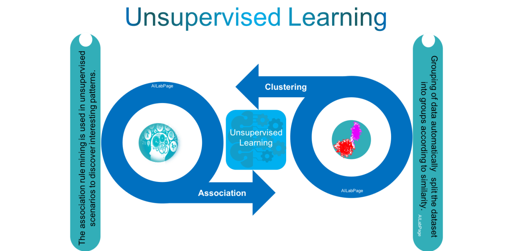
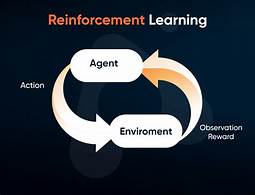
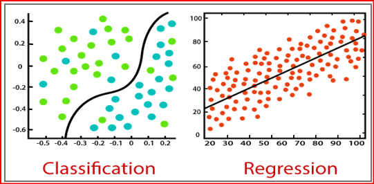

—Machine Learning—
Introduction
A machine learning process begins by feeding the machine a lots of data, by using this data the machine is trained to detect hidden insights and trends. These insights are then used to build a Machine Learning model by using an algorithm in order to solve the problem. Machine learning is an application of artificial intelligence (AI) that provides systems the ability to automatically learn and improve from experience without being explicitly programmed.
Data <-> Training the Machine <-> Building a Model <-> Predicting Outcome.
Machine Learning is a subset of Artificial Intelligence.
Why Machine Learning is important ?
- Increase in Data Generation.
- Improve Decision Making
- Solve Complex Problem
- Uncover patterns and trends in data
Application of Machine Learning-
- Automatic language translation.
- Speech Recognition.
- Traffic Prediction.
- Product Recommendation
- Self driven cars
- Online Fraud Detection.
- Medical Diagnosis
- Stock Market Analysis.
Types Of Machine learning-
- Supervised Machine Learning
- Unsupervised Machine Learning 
- Reinforcement Machine Learning 

Supervised Machine Learning
Supervised Machine Learning is a technique in which or train the machine using the data which is well labelled.
It is basically the task driven model.
Supervised learning is where you have input variables (x) and an output variable (Y) and you use an algorithm to learn the mapping function from the input to the output.
Y = f(X)
The goal is to approximate the mapping function so well that when you have new input data (x) that you can predict the output variables (Y) for that data.
It is called supervised learning because the process of an algorithm learning from the training dataset can be thought of as a teacher supervising the learning process.
Supervised learning problems can be further grouped into regression and classification problems.
Classification: A classification problem is when the output variable is a category, such as “red” or “blue” or “disease” and “no disease”.
Weaknesses: Unconstrained, individual trees are prone to overfitting, Logistic regression may underperform when there are multiple or non-linear decision boundaries. This method is not flexible, so it does not capture more complex relationships.
Strengths: Classification tree perform very well in practice and Outputs always have a probabilistic interpretation, and the algorithm can be regularized to avoid overfitting.
- Regression:
A regression problem is when the output variable is a real value, such as “dollars” or “weight”. - Regression technique predicts a single output value using training data. 
Some popular examples of supervised machine learning algorithms are:
- Linear regression for regression problems.
- Random forest for classification and regression problems.
- Support vector machines for classification problems.
- Weather conditions
- Time of the day
- Holidays
- Text categorization
- Face Detection
- Signature recognition
- Customer discovery
- Spam detection
- Weather forecasting
- Predicting housing prices based on the prevailing market price
- Stock price predictions, among others
Supervised machine learning uses training data sets to achieve desired results. These data sets contain inputs and the correct output that helps the model to learn faster.
For example, you want to train a machine to help you predict how long it will take you to drive home from your workplace.
Here, you start by creating a set of labeled data. This data includes:

Working of Supervised Machine Learning
There are some very practical applications of supervised learning algorithms in real life, including: